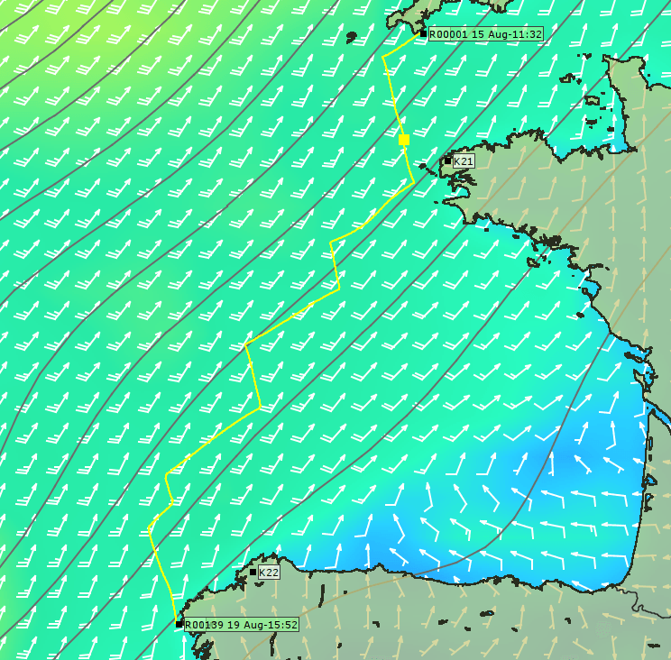
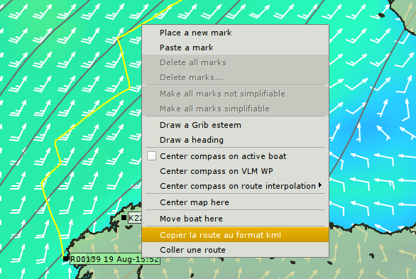
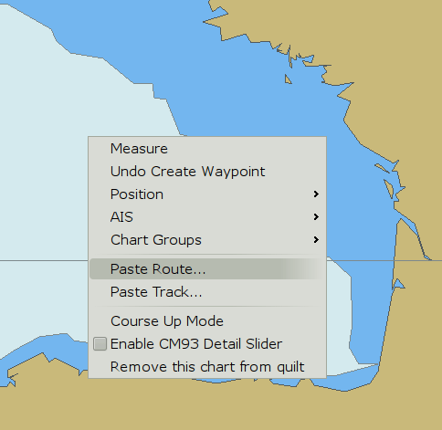
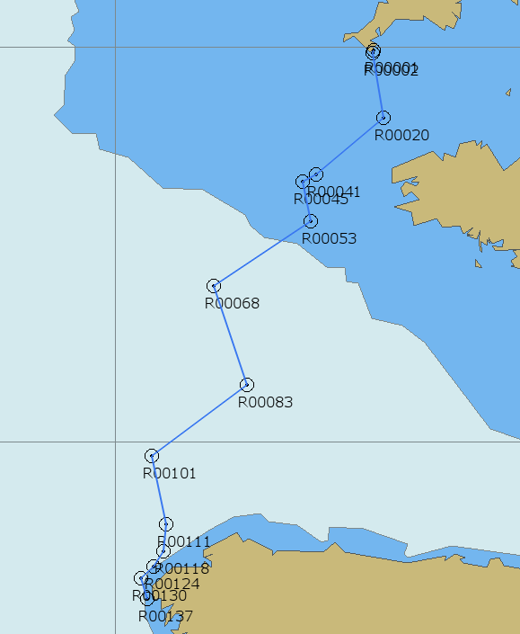
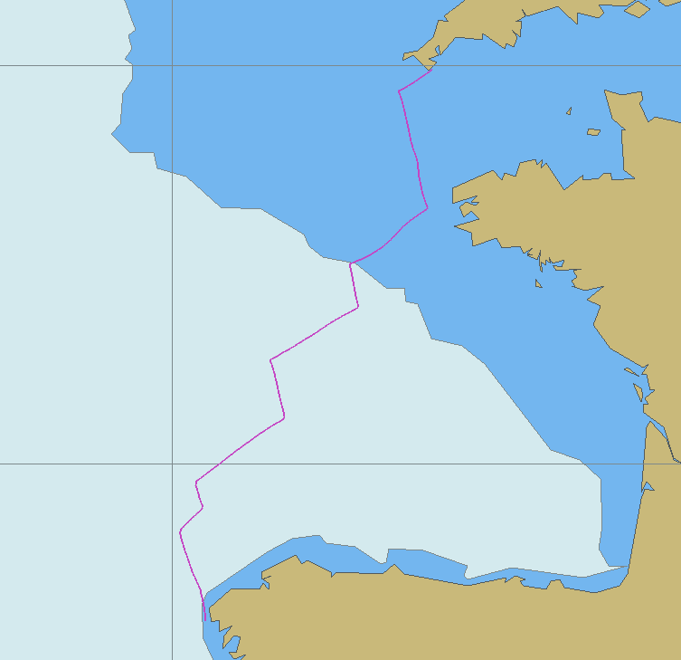
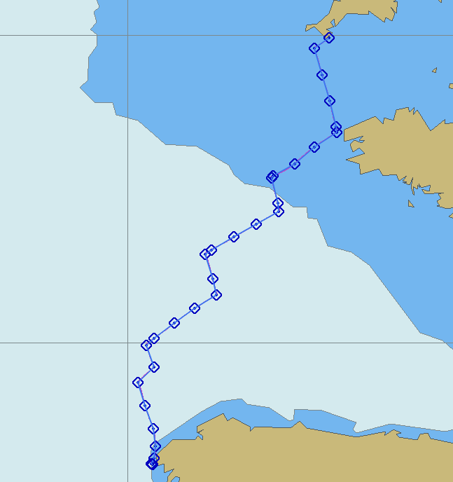

Users have the choice between using qtVlm or the Weather Routing Plugin.
It is recommended that you use the weather routing plugin as it is now stable and qtVlm is no longer free software (source code is not available).
Routing with an older version of qtVlm is described here.
OpenCPN can import optimized routes from the Free and OpenSource QtVlm program. Make yourself familiar with QtVlm if you intend to use it, as many things are done differently from OpenCPN.
QtVlm Documentation and Installation
QtVlm Thread on OpenCpn Cruiser's Forum
OpenCPN and QtVlm Summary of Route Transfer, see below
Before going any further, make sure you really understand grib files, what they are and their limitations. A good place to start is Franks Singletons pages.
Let's look at an example of importing an optimized route from QtVlm. It's a situation most of us try to avoid. Going across the Bay of Biscay with an active Atlantic Low just west of the British Isles.
The busy, time constrained, delivery skipper intend to find the best route from Lizard Point to Cape Finisterre. He has entered into QtVlm, the constraint, to route away from more than 30 kts headwinds. Below is the QtVlm optimized route based on the latest available grib file. Note that QtVlm doesn't know anything about tidal streams, currents local squalls nor about the state of the crew etc. These are more reasons why the final route always is the responsibility of the skipper.

Right-click on the route and export in the kml format.

Open OpenCPN. Right-click and “Paste Route”

This looks a bit ugly, and both the route and all waypoint have been exported. We want something better!

One alternative is to let QtVlm (Edit Route) “Simplify” the route before copying.

Another alternative is to first use the “Paste Track” option.
Note that this is no true track, it's just another way of exporting a route, possible due to the KML format. A track describes where we have been in the past, while routing is planning for the future. Importing the track gives a “light-weight” overview of the suggested route. Read more about the Grib Weather Plugin.

Next open OpenCPNs Route Manager Track Tab and press “Route from Track”.

Much better. We now have a track with a route on top. Right-click and delete the track. Next, it is smart to display the same gribfile used by QtVlm in OpenCPN, using the Grib Plugin.
All this looks impressive, but it's still based on a grib file. So it's still based on a computer prognosis, with no human input. All other reservations connected with gribs, still apply. An on board calibrated barometer is a good way to check what confidence can put on a grib forecast. Read more about the Grib Weather Plugin.
A reasonable polar diagram is essential as well. Producing one is standard procedure on racing boats, but not that common on cruising boats. Cruising specific factors, such as “comfort” also plays a part in a cruisers true performance capabilities.